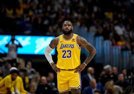
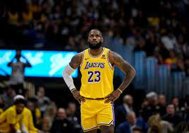

O basquetebol foi criado pelo professor de Educação Física canadense James Naismith (1861-1940), em 1891.
Sua invenção foi desenvolvida quando ele publicou as 13 regras para jogar basquetebol, em 1892.
Na época, ele trabalhava na Associação Cristã de Moços de Springfield, Massachusetts, nos Estados Unidos.
O esporte surgiu como uma alternativa ao inverno rigoroso da região, diferentemente dos outros praticados ao ar livre como o basebol e
o futebol americano.
A ideia original era criar um esporte menos violento que o futebol americano.
Além disso, James Naismith pretendia criar uma maior integração entre os alunos nas aulas de Educação Física e estimular a coletividade
dos grupos.
O primeiro jogo oficial de basquete foi disputado em 1892, e teve uma plateia aproximada de 200 pessoas.
Em 1893, o primeiro jogo feminino foi oficialmente jogado no Smith College, em Massachusetts, EUA.
 

É um dos esportes mais populares do mundo.
O jogo é disputado por duas equipes de cinco jogadores que tem por objetivo passar a bola por dentro do cesto disposto nas extremidades do campo.
Os cestos ficam a uma altura de três metros e cinco centímetros.
O objetivo do jogo é introduzir a bola no cesto da equipe adversária (marcando pontos) e, simultaneamente
evitar que esta seja introduzida no próprio cesto, respeitando as regras do jogo.
A equipe que obtiver mais pontos no fim do jogo vence.